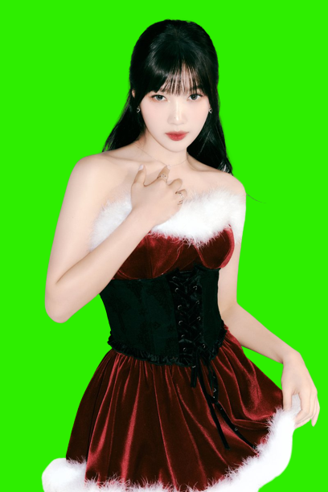

-
Close
Bae Ju Hyun atau yang akrab disebut Irene. Lahir pada tanggal 29 Maret 1991 di kota Daegu, Korea Selatan. Irene menempuh pendidikan terakhir di Haknam High School. Irene merupakan member tertua dalam grup dan dia diposisikan sebagai Main Rapper karena kemampuan dia dalam Rap dan juga ditunjuk sebagai Leader.
Warna representasi Irene adalah merah muda(pink) yang sangat cocok dengan dirinya. Irene memiliki hobi melakukan pekerjaan rumah seperti bersih-bersih, mencuci, memasak, hingga menyetrika pakaian oleh sebab itu itu dia memiliki sifat keibuan yang sangat tinggi.
Ada fakta menarik, dia tidak makan ayam sama sekali sebab saat dia kecil, dia pernah makan ayam dan jatuh sakit. Irene juga memiliki keunikan, misalnya saat acara Idol Star Atlethics Championships(ISAC) 2018 ketika MC Jun Hyun Moo berkata "jika ada seseorang berhasil mengenai bullseye dan kameranya rusak, aku akan traktir semua atlet makan ayam" dan saat itulah Irene berhasil mengenai bullseye.
Irene juga berhasil debut sebagai sub-unit IRENE&SEULGI pada tanggal 6 juli 2020 dengan lagu berjudul Monster. Irene memiliki akun Instagram pribadi yaitu,@renebaebae  Close
CloseKang Seul Gi atau yang akrab disebut Seulgi. Lahir pada tanggal 10 Februari 1994 di kota Ansan, Korea Selatan. Seulgi menempuh pendidikan terakhir di Seoul School of Performing Arts. Seulgi diposisikan sebagai Main Dancer karena kemampuan dia dalam menari dan juga sebagai Lead Vocal.
Warna representasi Seulgi adalah kuning yang sangat cocok dengan dirinya. Seulgi memiliki jiwa seni yang tinggi, hobi dia adalah menggambar dan bermain gitar.
Ada fakta menarik, Seulgi merupakan member dengan jumlah kolaborasi terbanyak. Pada tahun 2017 dia mengikuti sebuah program TV bernama Idol Drama Operation Team dan membuat girlgroup bernama Girls Next Door dengan judul lagu Deep Blue Eyes. Pada tahun 2018 dimana SM.Ent melakukan project berjudul SM Station X, Seulgi melakukan kolaborasi dengan SINB,Chung Ha, dan Soyeon dengan judul Wow Thing. Selain kolaborasi, Seulgi juga melakukan debut di luar Red Velvet, misalnya pada tahun 2020 dia melakukan debut Sub-Unit dengan Irene dengan nama IRENE&SEULGI dengan judul lagu Monster. Selain itu pada tahun 2022 Seulgi debut bersama GOT The Beat dengan judul lagu Step Back. Terakhir Seulgi berhasil debut solo pada taanggal 4 Oktober 2022 dengan judul lagu 28 Reasons. Seulgi memiliki akun Instagram pribadi yaitu,@hi_sseulgi-
Close
Son Seung Wan atau yang akrab disebut Wendy. Lahir pada tanggal 21 Februari 1994 di kota Seoul, Korea Selatan. Wendy menempuh pendidikan terakhir di Richmond Hill High School. Wendy diposisikan sebagai Main Vocal karena kemampuan dia dalam bernyanyi.
Warna representasi Wendy adalah biru yang sangat cocok dengan dirinya. Wendy merupakan member dengan kemampuan berbahasa Inggris yang baik sebab sejak kelas 5 SD Wendy pindah ke Kanada untuk menempuh pendidikan disana.
Wendy merupakan member yang sangat berbakat. Dia berhasil menyanyikan cukup banyak Original Soundtrack(OST), misalnya pada tahun 2014 dimana Wendy saat itu masih rookie, dia menyanyikan OST berjudul "Because I Love You" dalam drama "Mimi". Pada tahun 2016 Wendy bersama Seulgi berhasil membawakan OST berjudul "Don't Push Me" yang merupakan OST dalam drama "Uncontrollably Fond". Tidak hanya OST, Wendy pernah berkolaborasi dengan musisi ternama John Legend pada project SM Station dengan judul lagu "Written In The Stars".
Pada tahun 2019, Wendy pernah mengalami kecelakaan saat latihan untuk acara SBS Gayo Daejeon yang menyebabkan patah tulang pada bagian panggul kanan dan pergelangan tangan kakan serta luka-luka di muka. Kecelakaan yang dialaminya ini membuat para fans kesal dan memaksa SBS untuk melakukan permintaan maaf.
Pada tahun 2021 Wendy berhasil melakukan debut solonya dengan judul Like Water. Wendy memiliki akun Instagram pribadi yaitu,@todayis_wendy - 
Close
Park Soo Young atau yang akrab disebut Joy. Lahir pada tanggal 3 September 1996 di kota Jeju, Korea Selatan. Joy menempuh pendidikan terakhir di School of Performing Arts Seoul. Joy diposisikan sebagai Lead Rapper dan Sub Vocal.
Warna representasi Joy adalah hijau yang sangat cocok dengan dirinya. Joy merupakan member dengan kemampuan berakting yang sanagt baik.
Joy pernah muncul dalam drama "The Liar and His Lover"(2017) dan "The Great Seducer"(2018). Selain drama, Joy juga pernah muncul dalam variety show bernama "We Got Married", dimana yang menjadi "suami" dia adalah Sungjae (BTOB) dan acara tersebut sukses. Joy memiliki hubungan yang sangat erat pada Yerin (Gfriend) karena mereka merupakan teman sekelas pada masa SMA.
Joy memiliki seekor anjing bernama Haetnim sebab ia sangat menyukai hewan anjing, bahkan dia membuatkan akun instagram untuk anjingnya sendiri. Pada tahun 2021, Joy dikabarkan berkencan dengan penyanyi solo dibawah naungan PNation yaitu Crush.
Pada tahun 2021 juga Joy berhasil melakukan debut solonya dengan judul Hello. Joy memiliki akun Instagram pribadi yaitu,@_imyour_joy -
Close
Kim Ye Rim atau yang akrab disebut Yeri. Lahir pada tanggal 5 Maret 1999 di kota Seoul, Korea Selatan. Yeri menempuh pendidikan terakhir di Hanlim Multi Art School. Yeri merupakan member termuda atau biasa disebut maknae dan dia memiliki posisi sebagai Sub Vocal dan Sub Rapper.
Warna representasi Yeri adalah ungu yang sangat cocok dengan dirinya. Yeri baru bergabung dengan Red Velvet pada tahun 2015 ketika mereka melakukan comeback dengan lagu berjudul "Ice Cream Cake", alasan Yeri baru bergabung setelah 7 bulan mereka debut karena saat itu Yeri masih belum cukup umur untuk debut.
Yeri merupakan member yang memiliki jiwa sosial yang sangat tinggi. Yeri berteman dengan seorang aktris bernama Kim Sae Ron, biasanya mereka sering hang out bersama dan saling menyebarkan foto bersama di akun sosialmedia masing-masing. Yeri juga dikatakan dekat dengan Nayeon (Twice). Chuu (Loona) merupakan teman sekelasnya pada saat sekolah di Hanlim Multi Art School. Yeri memiliki julukan "MingMing" yang diberikan oleh Sana(Twice).
Yeri pernah muncul pada variety show berjudul "Secret Unnie" bersama dengan aktris Han Chae Young. Yeri pernah memiliki acara sendiri di Youtube, yaitu Yeri Han Bang
Pada tahun 2021, Yeri berhasil melakukan debutnya sebagai aktris dengan darama berjudul "Blue Birthday". Yeri memiliki akun Instagram pribadi yaitu,@yerimiese